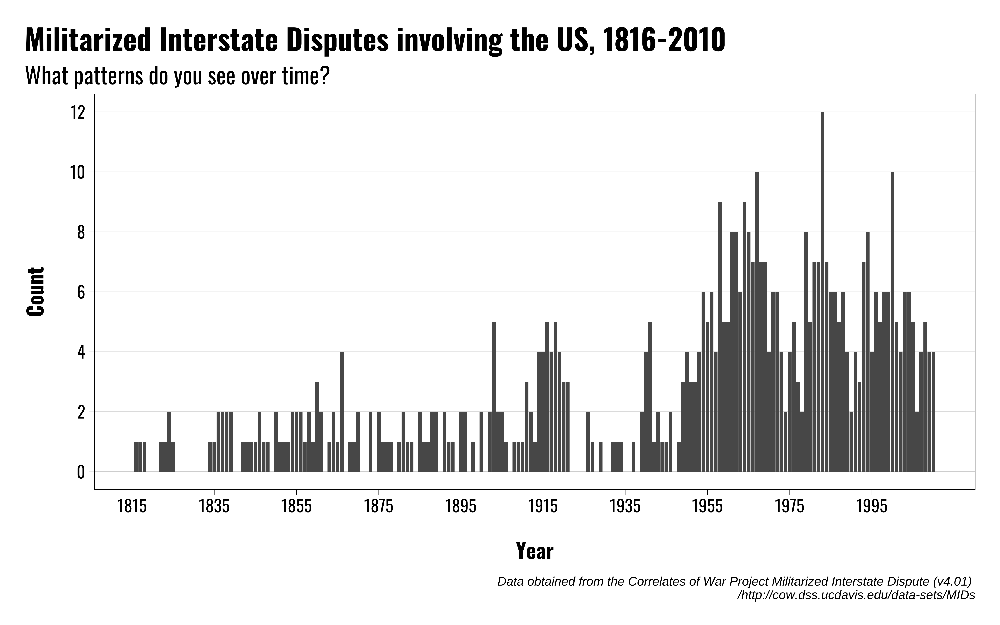
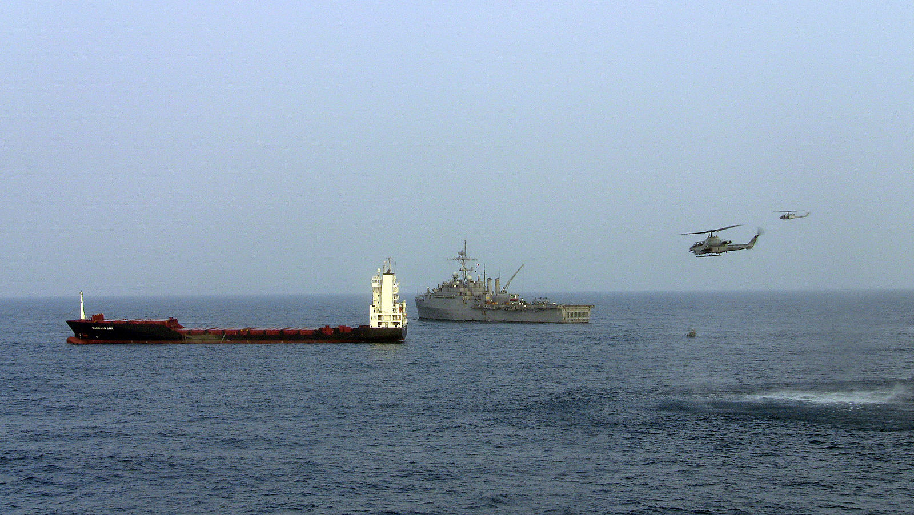
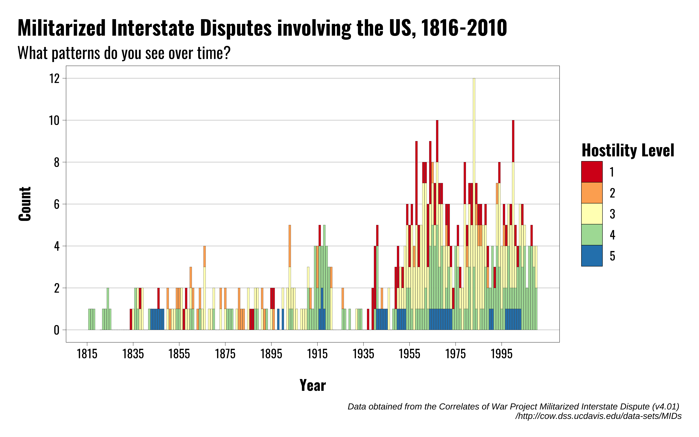
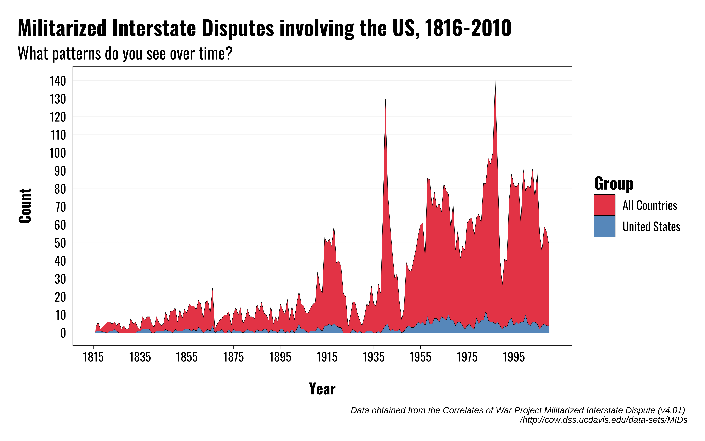
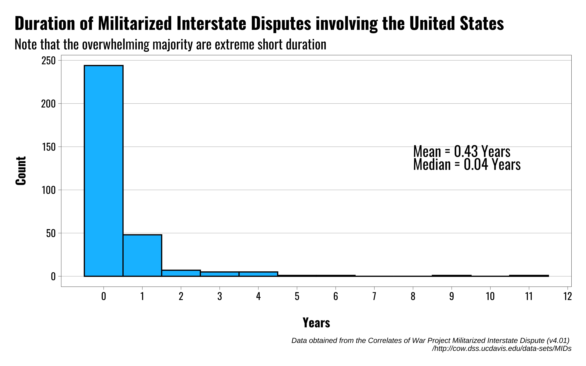
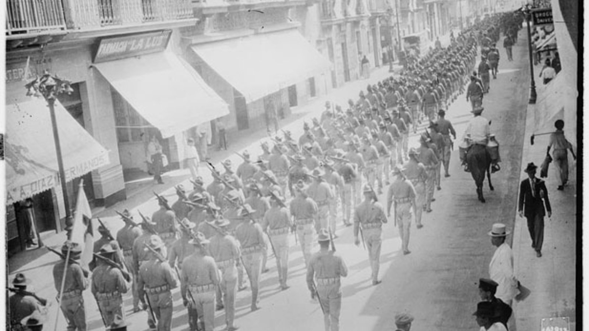
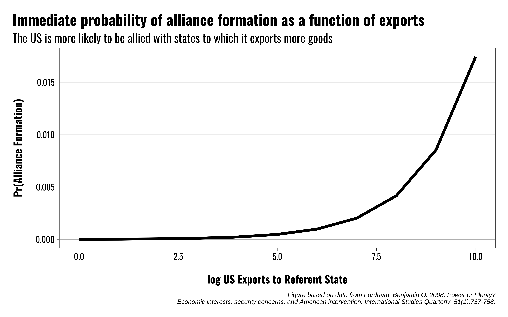
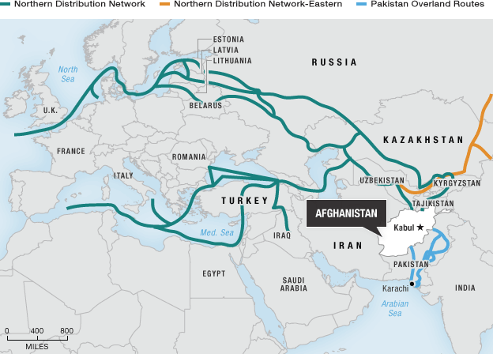

US Foreign Policy
The Use of Military Force
Michael Flynn
Professor
Department of Political Science
011C Calvin Hall
meflynn@ksu.edu
2025-10-29
Lecture Overview
What constitutes a “use of force”?
Trends in the use of force over time
When and why does the US use military force?
Constraints on the Use of Force
Key Questions
What does US military activism look like over time?
What constraints do policymakers face when using military force?
What domestic factors shape incentives to use military force?
Why do policymakers escalate (or not) military conflicts?
What role do concepts like “resolve” play in the use of force?
What Constitutes Force?
What Constitutes Force?
What do we mean when we talk about the use of force?
This probably seems obvious, but reality differs from most people’s perceptions
Most uses of military force are short duration and low intensity
Large-scale uses of force (i.e. wars) are relatively rare


What Constitutes Force?
What do we mean when we talk about the use of force?
This probably seems obvious, but reality differs from most people’s perceptions
Most uses of military force are short duration and low intensity
Large-scale uses of force (i.e. wars) are relatively rare



When and Why Does the US Use Force?
When and Why Does the US Use Force?
Motivations:
- Protest citizens abroad
- Acquire territory
- Secure commerce and access to markets
- Secure access to to resources
- Remove hostile leaders/governments from power
- Check expansion of rival powers
- Signal resolve
- Strikes against actors who use terror
- Intervene for humanitarian reasons

When and Why Does the US Use Force?
But what general factors should we think about?
Two broad categories:
International factors
Domestic factors
When and Why Does the US Use Force?
International factors
Opportunities to use force
Interests
Security Interests
Economic interests
| Predictor | Civil Wars | International Crises |
|---|---|---|
| Ally involvement | + | + |
| Rival intervenes first | + | + |
| Volume of trade | ||
| Relative power of target | ||
| Distance from US | + | |
| Population of target | - | |
| Democratic states | ||
| US growth rate | ||
| # Other states involved | - | |
| Note: | ||
| Fordham, Benjamin O. 2008. Power or Plenty? Economic interests, security concerns, and American intervention. International Studies Quarterly. 51(1):737-758. |

When and Why Does the US Use Force?
Resolve
- Politicians often talk about this a lot, but what is it?
A signal that an actor is willing to endure costs over a long period of time
- But how can actors effectively communicate resolve?
When and Why Does the US Use Force?
Domestic Political Factors
Diversionary use of force?
Partisanship?
Ideology?
When and Why Does the US Use Force?
Diversionary Use of Force
The idea is to distract from poor economic or domestic political conditions
Use of force triggers a “rally” effect, increases presidential approval/favorability ratings


When Does the US Use Force?
But diversion may be more complicated
Parties are better/worse equipped to respond to “bad” conditions
We can think of policy as substitutable, rather than strictly as diversionary
Example: Unemployment
Democrats
Republicans

When Does the US Use Force?
What about other countries?
So far we’ve assumed the US initiates the use of force, but sometimes it’s also a target
We often focus on decision-making within the US, ignoring the decisions of other states
What sorts of factors determine when other countries target the US, and the intensity with which they do so?
When Does the US Use Force?
When is the US a target?
- A few factors to consider
- When is a target vulnerable?
- When is a target’s hands tied?
- When do you want to avoid “poking the bear”?
Diversionary logic can help us here:
- Economic conditions: States try to avoid conflict with the US when economic conditions are bad (e.g. high unemployment).
- Partisanship: Prior beliefs about how likely presidents of different parties are to use military force may shape other states’ decisions about attacking the US.
- Rivalry: States with long-standing grievances and hostility towards the US may be more likely to use force in general.
| Outcome/Variable | Effect |
|---|---|
| Conflict Intensity | |
| US conflict behavior | + |
| US Unemployment rate | - |
| Democratic president | + |
| Communist state | + |
| Variation in State Behavior | |
| State power | + |
| Communist regime | + |
| Note: | |
| Dave Clark, Ben Fordham, and Tim Nordstrom. 2011. Preying on the Misfortune of Others: When do states exploit their opponents' domestic troubles? Journal of Politics. 73(1):248-264. | |
Constraints on the Use of Force
Constraints on the Use of Force
A puzzle:
The US is the most powerful state in history, but it loses wars and we never see its military capabilities used in full. Why?
What constraints exist on US military power?
What are the limits of US military power?
Constraints on the Use of Force
Some key factors:
Law and legitimacy
Risks, costs, benefits
Credibility
Public support
What will allies do?
What will rivals do?
Is the military the appropriate instrument of power for the goal in question?
Constraints on the Use of Force
Constitutional Authority
The US Congress has had the authority to declare war (Article I. Section; 8. Clause 11)
The President is designated by the Constitution as Commander-in-Chief of the US military (Article II. Section 2. Clause 1)
Congress has also previously exercised the authority to delegate limited uses of military force, short of war
- Example: Quasi-War with France, 1798-1801
The Executive has claimed more authority and autonomy over time, particularly in the post-WWII era
Constraints on the Use of Force
War Powers Resolution of 1973
A response to the Vietnam War and concerns about executive overreach
Passed in 1973 Over President Nixon’s veto
Requires:
§ 3: Regular consultations, “in every possible instance,” with Congress prior to deploying troops
§ 4: Report to Congress within 48 hours of troop deployment explaining cause and justification for deployment. Also requires ongoing reports while troops are deployed.
§ 5: Places a 60 day time limit on the deployment of US personnel, absent Congressional action.
§ 5: Empowers Congress to end US military action by concurrent resolution
Constraints on the Use of Force
International Law
The UN Charter generally prohibits the use of force, except in two cases:
Individual or Collective Self-defense (Article 51)
When authorized by the UN Security Council to maintain peace and stability (Chapter VII)
Hague Conventions focus on means and methods of warfare
Geneva Conventions and other treaties place limits on the conduct of warfare
Various other treaties and agreements
- Convention against torture and other cruel, inhuman, or degrading punishment of 1984
- Biological Weapons Convention of 1975 (BWC)
- Chemical Weapons Convention of 1993 (CWC)
- Nuclear Non-Proliferation Treaty of 1970 (NPT)
- Anti-Personnel Mine Ban Treaty of 1997 (Ottawa Convention)


Constraints on the Use of Force
Domestic public support
Public support generally diminishes over time
As a rule, the costs of war only grow over time
Military force becomes increasingly political, leading to greater congressional involvement
Conflict reveals information over time, and may reveal faulty assumptions from war’s beginning
Constraints on the Use of Force
What will allies do?
Allied leaders may press for limits on the scope of conflict
They might withhold capabilities
They might limit mission types in which their troops can participate
Allied publics might not support expanding the scope of conflict

Constraints on the Use of Force
What will rivals do?
Rivals might greet US escalation with their own action
Rivals may benefit from overly aggressive US action
Rivals might also ramp up their efforts to counter US in other geographic/issue areas
Constraints on the Use of Force
Are there better options?
The US has come rely more and more on the military to do a wide range of tasks
But the military may not always be the best tool for the job
The use of force often requires deploying other forms of power, influence, and expertise, but the military can’t generate comparable levels of expertise in all issue areas as compared to other agencies
Efforts to build soft power may be undercut or offset by US military presence